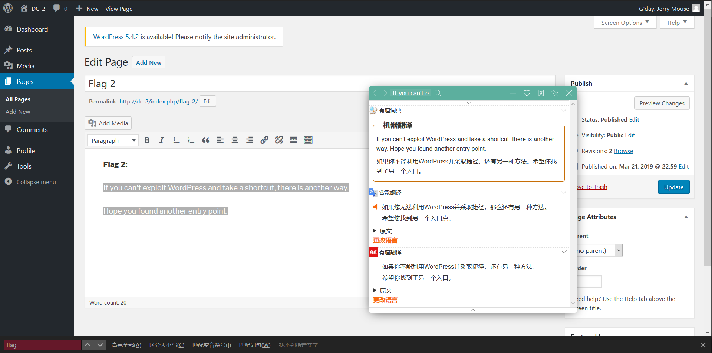
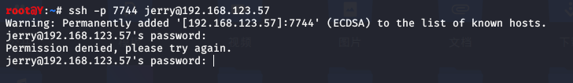

来自之前cnblog的博客
源地址：https://www.cnblogs.com/This-is-Y/p/13203455.html
配置好vmbox网络环境，运行DC2靶机
打开kali，改用桥接模式。可以ping通物理机，可以上网。
用nmap扫描存活主机
nmap -sP 192.168.123.0/24
可以看到有DC-2，DC-3（这是我另外开的，暂时不用管）
DC-2靶机ip：192.168.123.57
得到了靶机ip，根据制作者提示，在windows下host文件中加入
192.168.123.57 dc-2
用于DNS解析
打开dc-2
提示我们要用字典，cewl，应该是后台爆破
用dirsearch 爆破后台
回到kali，用cewl生成字典
直接在kali下用cewl是用没用的，因为kali下访问dc-2得不到任何结果，需要配置kali下的hosts文件，
vim /etc/hosts
:wq保存退出，浏览器访问dc-2正常表示配置成功
然后开始使用cewl获取网页信息同时生成字典
根据提示，我们通过cewl获得的应该只是密码字典，要登陆后台，还需要用户名。
发现在忘记密码这里没有做验证码，而且当填写admin和其他乱七八糟数据时，回显不同（填写admin，直接跳转了，其他的则是提示ERROR: Invalid username or email.）考虑从忘记密码这里爆破获取可用用户名
打开bp，抓包，添加参数，导入字典。
这里我用的github上的一个字典，70kb的username，1w+条数据。等他跑一会。
等了差不多10来分钟，跑出的结果有3个：
admin
jerry
tom
。。。。tom，jerry？？！！

再分别对这3个用户爆破密码
admin爆破失败
tom：parturient
jerry：adipiscing
用jerry登陆到后台，找了找，发现flag2

这个只有jerry账户里面有，登陆tom可以看到page，但是打不开
根据flag的提示，应该要我们从别的地方突破
这里我卡住了，看别人的博客发现。用
nmap -sS -p- 192.168.123.57
可以扫出80，7744端口（我在这里卡住是因为我nmap就扫出来一个80端口，得好好再学学nmap了）
这里显示的服务看不懂，再用nmap扫一下确认服务
nmap -sV -p 7744 192.168.123.57
ssh。这应该就是flag说的另一个突破口了
用jerry账户连接，被阻止

用tom连接，可以连接，目录下有一个flag3.txt文件，但是提示command not found
提示-rbash，受限制的bash
参考这个：https://blog.csdn.net/qq_38677814/article/details/80003851
解决了cat的问题
BASH_CMDS[a]=/bin/sh;a
export PATH=$PATH:/bin/
export PATH=$PATH:/usr/bin

flag3.txt: Poor old Tom is always running after Jerry. Perhaps he should su for all the stress he causes.（可怜的老汤姆总是追着杰瑞跑。也许他应该为他造成的所有压力辩护）
su，提到了这个
继续在这个shell下操作，su jerry
然后就切换到了jerry
但是想要ls的时候，提示说被禁止
cd ../..退出一下就好了
cat一下flag4.txt
提示让我们git
百度查了查，git -p help和git help config然后搭配!/bin/bash都试过了，没用。
然后看攻略，，发现我忽略了一个sudo，
正确提权姿势
sudo git help config
然后直接输入!/bin/bash
出来就变成root了
学习点：
1、cewl生成字典
2、nmap的使用（-p-）要不是不会这个，也不至于找不到端口，卡死在ssh连接上
3、suid提权
4、git提权
5、bash这一块有关知识
6、sudo